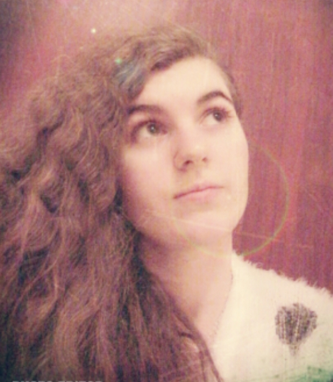
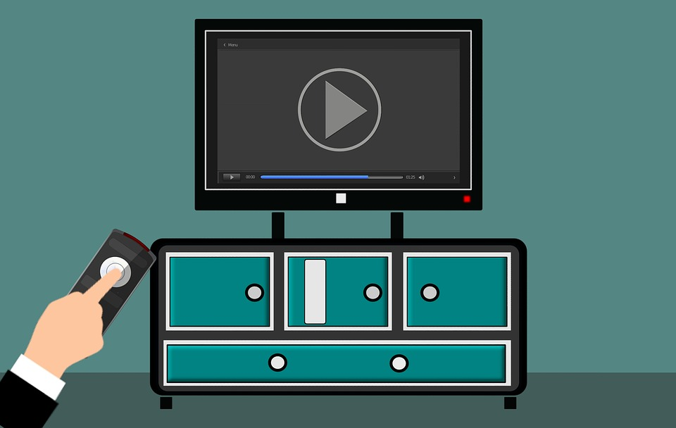

Hi My name is Sophia Zito I am currently looking for work, I finished a level 2 course at New College Stamford in June 2019. I am 20 years old, An aquarius girl, who is hardworking, focused, punctual and organised. I have a good sense of problem solving, and I am a quick learner for any role.
I am half American and half Italian, but I was born here in England and grew up here ever since. I am proud to be different nationalities, I think that makes me who I am
I am a kind and caring person. I believe we should all be treated equally and with respect, no matter what race, gender or sexuallity or religion we follow. We still have not achieved a full sense of equality or respect, we still see on the news races being treated differently, men still getting paid more than women. I hope we come to see a day where the world isn't filled with so much hate.
Hobbies
I love gaming in my free time, it's my way to escape reality and to be free for awhile. I love listening to music, I listen to all different types of music: pop, rock, rap, latin, kpop, japanese, International and eurovison songs is the music I usually listen to.
I also enjoy my time watching tv shows, they make you imagination come to life. Watching tv shows help with my creativity. I am also a writer when I am inspired, I mostly write emotional based poetry and recently began to write full stories.
My future career goal is still not known, but my ideal career would be in an office base environment or in an environment where I can help people. I am still young and wouldlike to explore a range of different jobs to really find what career can make me happy, because haapiness should be the top priority when looking for work. You need to be happy in the job you get and make sure you truly enjoy the work you do on a daily basis, too many people nowadays are only in jobs for the money, but it should really be about your happiness in life.
Another one of my goals is when I have been able to get a job or apprenticeship, I would use some of the money to go into driving lessons, so that I can learn how to drive and hopefully pass and eventually drive to work instead of taking buses for the rest of my life.
I hope you have enjoyed learning a bit more about me.